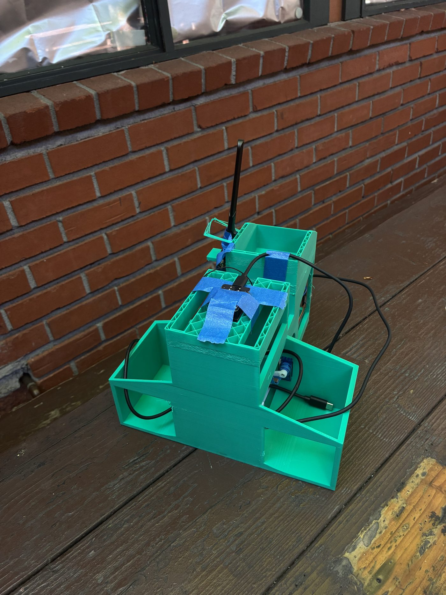
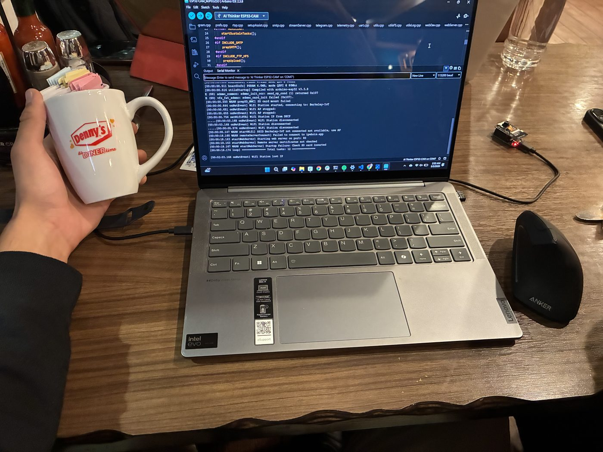
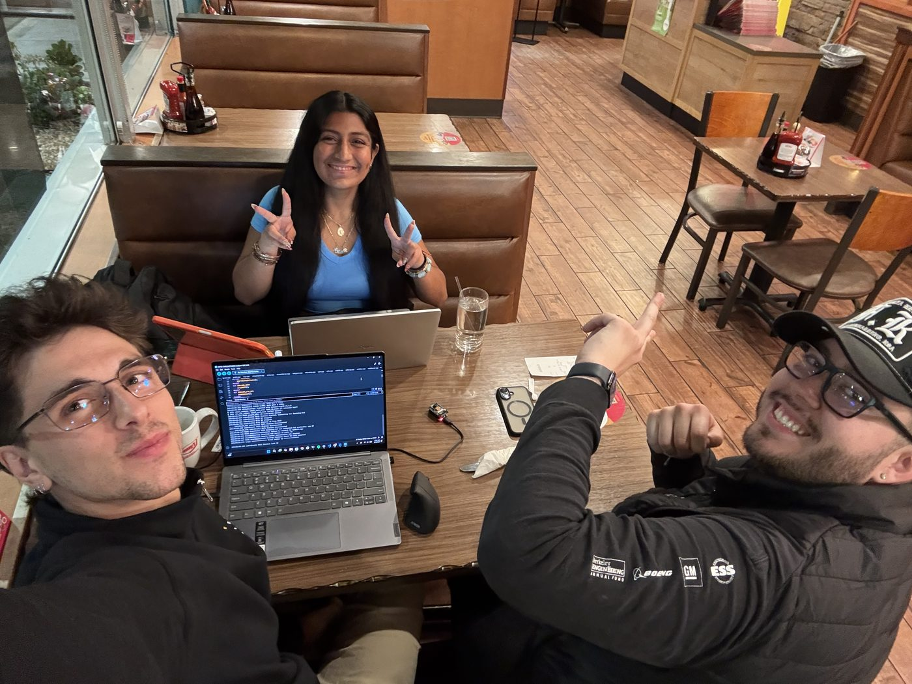

Automatic Trading Card Sorter
2026
- Built a machine that automatically sorts Pokémon cards by their market value.
- Programmed an ESP32-CAM to photograph each card and a second ESP32 to drive the servos.
- Wrote the vision and pricing software: OCR lookup, live price scraping, and a demo mode.
Collaborators
Links / info

Overview
The Automatic Trading Card Sorter is a machine that takes a stack of Pokémon cards and sorts them into bins on its own, separating the valuable cards from the common ones without anyone having to look each one up by hand. A card drops through the machine, the system identifies it, decides which bin it belongs in, and a set of servos steers it there. Eddie and I built it together: he focused on the mechanical design and the physical model, while I focused on the software, firmware, and electronics.
How it works
The build runs on two ESP32 microcontrollers that talk to each other over WiFi. An ESP32-CAM sits above the card slot and photographs each card, serving the image over a simple HTTP endpoint. A host program pulls that photo, reads the card's name and number with OCR, looks up its set and current market price online, and decides whether it is high or low value. It then sends a command to the second ESP32, which drives the servos that tilt a chute and drop the card into the correct bin.
Because the online lookup takes a moment, I also wrote a faster demo mode that skips the internet entirely and sorts by the card's dominant color instead, so the machine can run live in front of people without waiting on a price server.
 